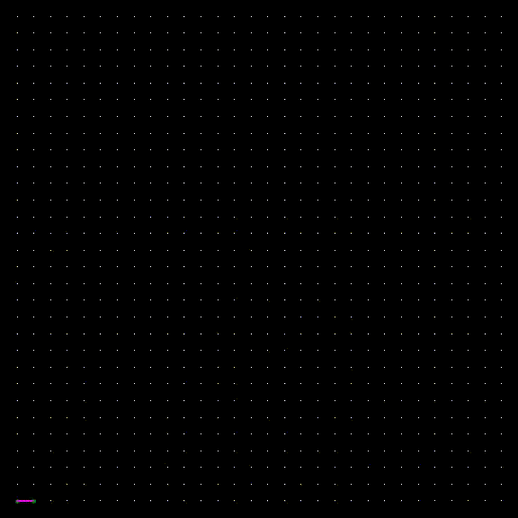
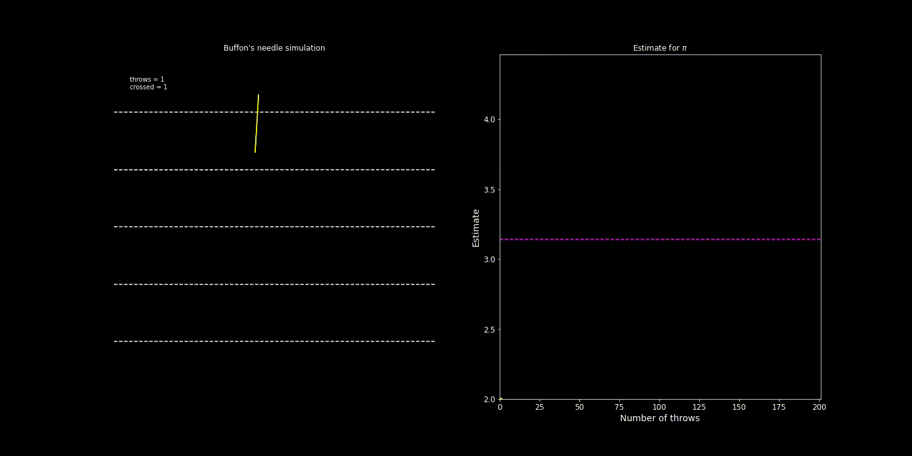
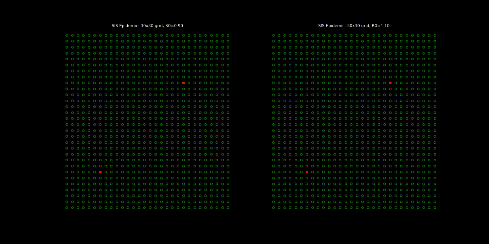

Simulation Modeling and Analysis
|  |
| Random Spanning Tree via Wilson’s Algorithm |
Course Description
Intro to Monte Carlo techniques and stochastic simulation. We will cover two topics:
- Monte Carlo simulation: Using randomness to aid complex computations.
|  |
| Buffon’s Needle simulation for computing $\pi$ |
- Discrete-event simulation: Using stochastic models for counter-factual analysis (i.e., answering `what-if questions’) in complex real-world systems.
|  |
| SIS epidemic model below and above $R_0=1$ |
Topics include: random variable and process generation; data-driven distribution learning; input and output analysis; modeling and optimization of complex systems under uncertainty. Emphasis on $i.$ understanding how to use simulation to answer “what-if” questions, and $ii.$ tools and techniques needed in practice, in particular, modeling and simulation in Python.
Course Information
- Lectures: TR 11:30am-12:45pm, Statler auditorium (room 185), seating chart
- Instructor: Sid Banerjee, 229 Rhodes Hall, email
- Teaching Assistants:
Recitation and office hours schedule available on Piazza.
Course Logistics:
This semester, the course combines a hybrid class (ORIE 4580), a full semester online class (ORIE 5580) and a half semester online class (ORIE 5581). We will try our best to ensure things run smoothly, but really depend on (and appreciate!) your help in this.
- Zoom: Main lecture meeting link (passwd and OH/recitation links on Piazza)
- Canvas: We have a combined Canvas page (please join if not added).
- Piazza: All announcements and resources will be posted on a Combined Piazza page. Please join the site immediately if not automatically added.
- CMSx: Homework submissions must be done electronically via CMSx. You should be automatically signed up for this (please tell us immediately if not).
- iClicker: Students must use the REEF Polling app for in-class tests. Please see the following instructions.
Course Material
Course notes: These will be uploaded on Piazza before the class. Students are encouraged to annotate them.
Textbook: Simulation by Ross; This is the suggested textbook for the course. An e-copy is available online on the Cornell library website.
Coding Resources:
The assignments in the first half of semester can be done in any high-level language; our recommendation is for using Python (in particular, we will use Python 3.6 for our solutions) and Jupyter notebooks.
- For desktop use, we recommend installing a package manager like Anaconda, which installs Python, the Jupyter Notebook, and other commonly used packages. For coding online, we highly recommend Google Colab (this is also great for collaboration with teammates).
- The python tutorial is a good place to look up basic and advanced syntax. It should help you map other programming knowledge you have to Python.
- The power of Python lies in its many packages - use library reference to find standard library modules to help get your work done quickly.
- Additional packages we will use extensively are NumPy, SciPy (and also SimPy for DES). There are many more functions in scipy and numpy than you can remember, so for a given task look at the scipy reference or numpy reference to find the tool you are looking for. Also, read numpy for MATLAB users if you are familiar with MATLAB.
- For visualization, we will use Matplotlib and Seaborn. Matplotlib has many built-in plotting capabilities, and the matplotlib gallery is a good way to find code snippets for tasks similar to what you need. Seaborn is another great visualization package for data analysis - less powerful in general, but easier to use for standard tasks.
- Finally, searching online for a task often brings up excellent suggestions in sites like StackExchange. Get used to using this!
In the second half of semester, we will briefly look at a commercial simulation package, Simio. This only operates on PCs, or on Macs running Windows. Simio is available in 571 Rhodes Hall and 453 Rhodes Hall. Students may consider obtaining the student version of Simio ($25, available here) - this imposes limits on the size of the models, but should be sufficient for our course.
Siddhartha Banerjee
Associate Professor
Sid Banerjee is an associate professor in the School of Operations Research at Cornell, working on topics at the intersection of data-driven decision-making, market design, and algorithms for large-scale networks.